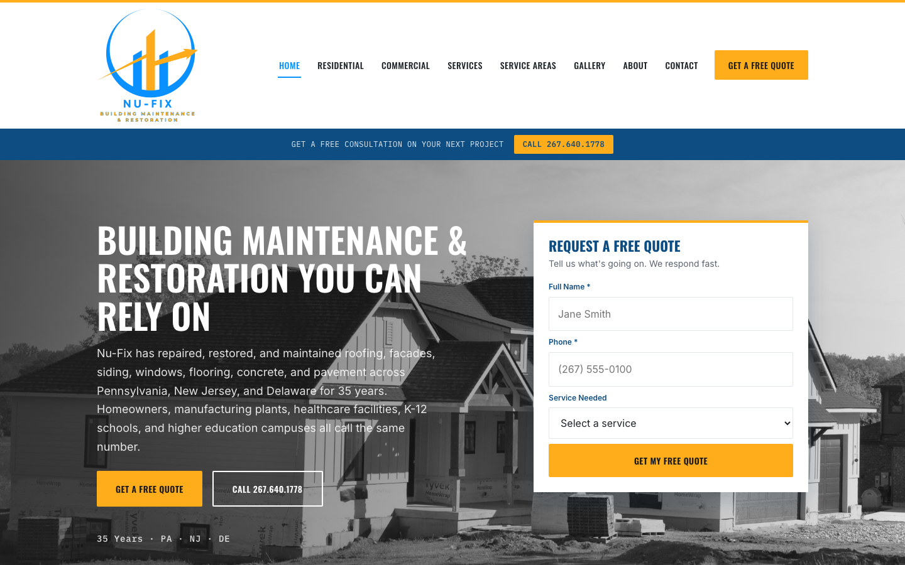

Nu-Fix, a 35-year contractor with a site to match.
A custom website for a building maintenance and restoration contractor serving homeowners, factories, hospitals, and schools across Pennsylvania, New Jersey, and Delaware.

The problem
Nu-Fix has repaired and restored roofs, facades, siding, windows, flooring, concrete, and pavement for 35 years. Its site was a generic template that did not show the scale of the work. The business also serves two very different buyers: a homeowner with a leak, and a facility manager planning maintenance for a campus or plant.
Before and after
The previous site was a single page with a mailing address, a phone number, and five trades listed under one orange block. The rebuild gives each buyer a path, shows the work, and puts the quote form in the first screen.
What I built
- Eight main pages plus a roofing repair detail page. Home, Residential, Commercial, Services, Service Areas, Gallery, About, and Contact.
- One path per buyer. Residential and Commercial are separate pages, because homeowners and facility managers ask different questions and need different proof.
- A quote form in the hero with a phone number and a "Get a Free Quote" button repeated on every page.
- A filterable gallery sorted by roof type, so a visitor can look at slate, cedar shake, standing seam metal, asphalt shingle, or commercial flat work.
- Structured data. Contractor and roofing contractor schema with 11 listed services, three states served, and opening hours, plus a unique title and description on every page.
Decisions that mattered
- The map shows a general area, not an address. The mailing address is a private mailbox. Pinning it exactly would imply a storefront that does not exist, so the map centers on Doylestown with a note that there is no walk-in office.
- Trust before price. Pages state the written quote, proof of license and insurance before work starts, and one point of contact per job.
- Honest gaps. The gallery says siding, flooring, concrete, and pavement photos are on the way instead of showing empty or borrowed images.
- Fast revision rounds with the client. Their feedback added the Residential page, enlarged the logo, corrected two mislabeled gallery photos, removed a section they did not want, and sent form submissions to their service inbox. A mobile menu overflow that the larger logo exposed was fixed in the same round.
Outcome
The site is built, published on Netlify, and moving to nu-fix.com from the old template site. The business is new to asking for online reviews, so I am not showing review or traffic numbers. I have no lead data yet, so none is claimed.
Tools, stack, and skills
- Stack
- HTML, CSS, JavaScript, Netlify, GitHub
- Tools
- Schema.org structured data (GeneralContractor, RoofingContractor)
- Skills
- Local SEO, information architecture, responsive design, client revision rounds